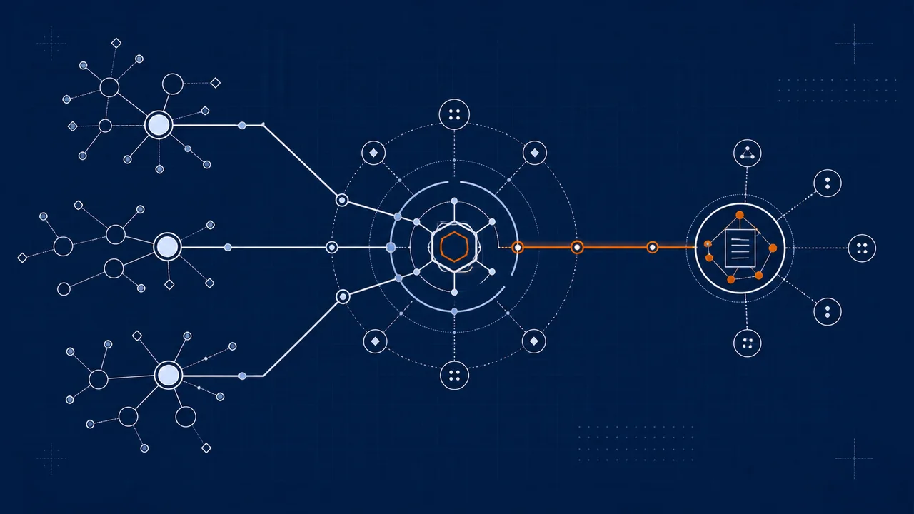

When shared agent memory becomes production infrastructure.
Vellis gives builders an open substrate for agent memory. Kesher is Volant Partners' governed platform for carrying that pattern into production with write controls, audit traces, approval paths, and implementation discipline.

Same open foundation. A governed operating layer when teams need it.
Vellis is the open substrate: runnable, inspectable, and portable. Kesher is Volant Partners' governed platform for customer work, adding the controls, workflows, and operating support needed to use that pattern responsibly in real operations.
Open, inspectable, runnable.
Governed for the team.
Ready for governed operations?
When audit, policy, approvals, and operating change management start to matter, Kesher provides the governed platform and Volant Partners provides the implementation support.
Book a conversation Opens the Volant Partners contact form.